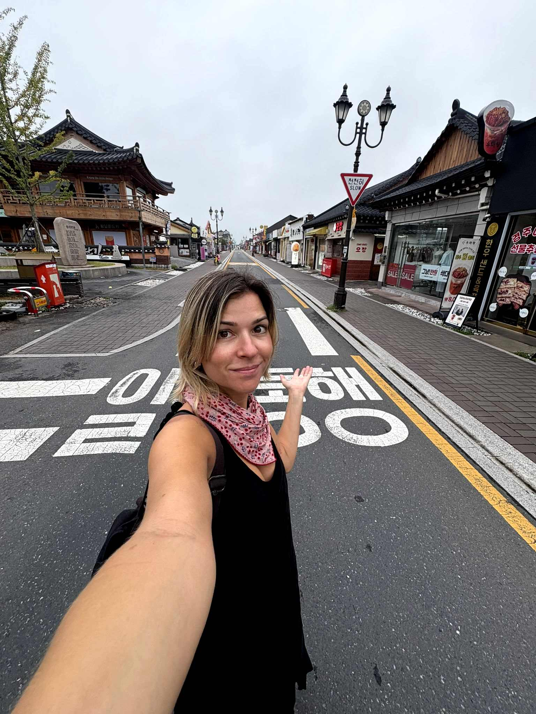
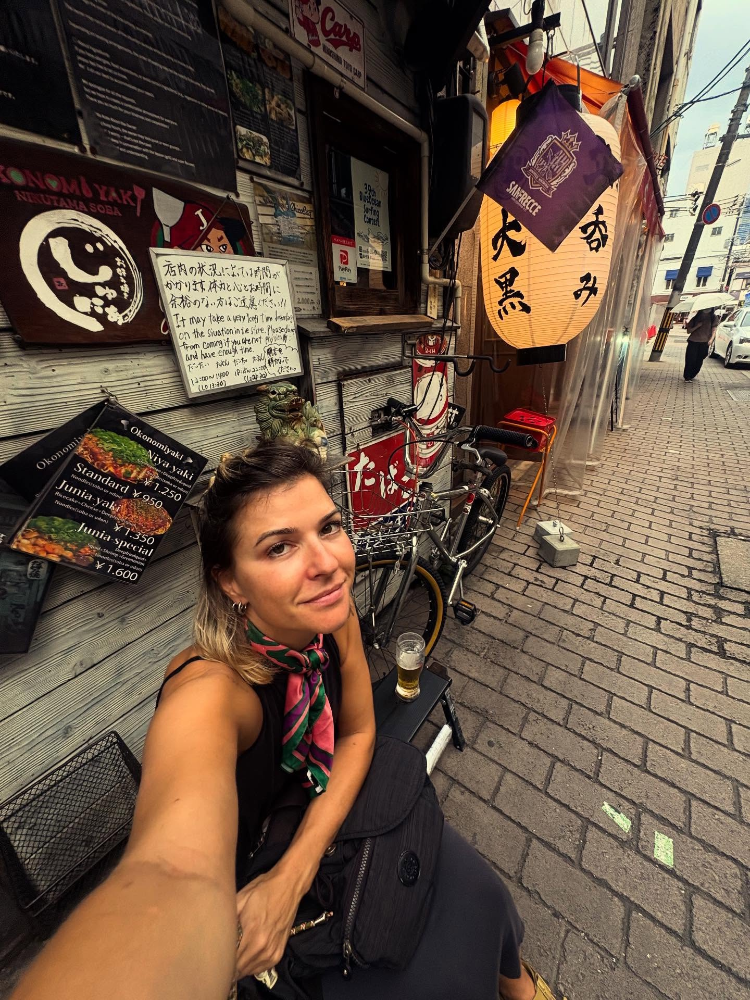

Restaurantes
Experiências gastronómicas marcantes.
Países onde a tradição e a modernidade coexistem.
Uma viagem pessoal pela Coreia do Sul e Japão — cidades, ilhas, comida, silêncio e excesso.
Experiências gastronómicas marcantes.

Imperdível.

A realidade